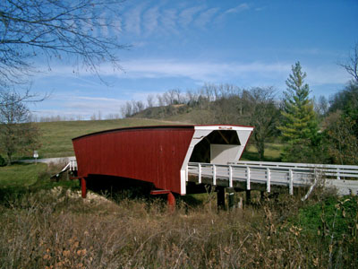
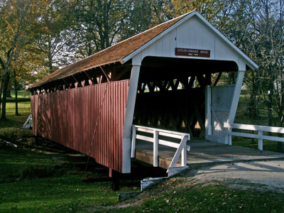
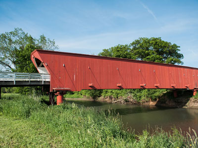
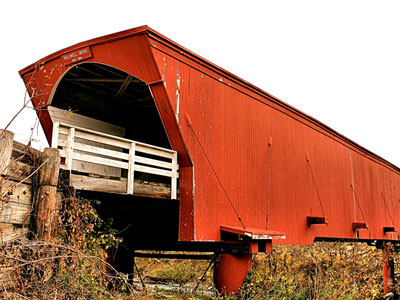
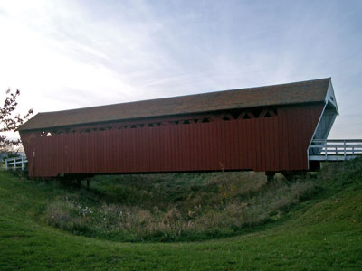
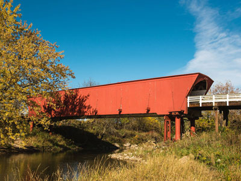

Famous for a number of covered bridges featured in Robert James Waller's 1992 novella, as well as the 1995 film and 2014 musical based on it
General Information
Madison County Welcome Center in Winterset: Mon–Fri 9am–5pm, Sat 10am–4pm (for maps and information)
How to Get There
From Des Moines (approximately 30 miles southwest): Take US-169 S or IA-28 S to Winterset. Pick up a free covered bridge map at the Madison County Welcome Center on the town square in Winterset (73 Jefferson St) — the map shows the exact locations of all six bridges and the best driving route between them. Allow 2–3 hours to visit all six bridges.
Overview
Madison County is famous for being the county where John Wayne was born, and for a number of covered bridges. These bridges were featured in Robert James Waller's 1992 novella The Bridges of Madison County, as well as the 1995 film and 2014 musical based on it.
History
Madison County was formed in 1846 and named for President James Madison, with its first European-American settlers arriving from Missouri that same year.
There are five extant covered bridges in Madison County, of the original nineteen:
- Cedar Bridge built 1883, destroyed 2002, rebuilt 2004, 76 feet (23 m) long. The rebuilt bridge was destroyed by a fire in 2017.
- Cutler-Donahoe Bridge built 1870, 79 feet (24 m) long.
- Hogback Covered Bridge built 1884, 97 feet (30 m) long.
- Holliwell Bridge built 1880, 122 feet (37 m) long. Featured in the 1995 movie The Bridges of Madison County.
- Imes Bridge built 1870, 81 feet (25 m) long.
- Roseman Covered Bridge built 1883, 107 feet (33 m) long, is the best known one, as it is featured in the 1995 movie The Bridges of Madison County.
The remaining covered bridges were designed by Harvey P. Jones and George K. Foster, with the following exceptions: Eli Cox built the Cutler-Donahoe Bridge, and J. P. Clark built the Imes Bridge.
This article uses material from the Wikipedia article "Madison County, Iowa", which is released under the Creative Commons Attribution-Share-Alike License 3.0
Featured Locations and Trails

Ymblanter, CC BY-SA 4.0, via Wikimedia Commons; Image Size Adjusted

Cedar Covered Bridge
One of the famous Iowa bridges filmed in the 1995 movie The Bridges of Madison County

Ymblanter, CC BY-SA 4.0, via Wikimedia Commons; Image Size Adjusted

Cutler Donahoe Bridge
79-foot-long (24 m) covered bridge in Madison County, Iowa

Teddi Yaeger, CC BY-SA 4.0, via Wikimedia Commons; Image Size Adjusted
Hogback Covered Bridge
Historic covered bridge near Winterset, Iowa and one of the only six remaining covered bridges in the county

Phil Roeder from Des Moines, IA, USA, CC BY 2.0, via Wikimedia Commons; Image Size Adjusted

Holliwell Covered Bridge
Wooden covered bridge renovated and restored in 1995 and featured in the film The Bridges of Madison County

Ymblanter, CC BY-SA 4.0, via Wikimedia Commons; Image Size Adjusted

Imes Bridge
Wooden covered bridge is the oldest of the remaining covered bridges in Madison County

Teddi Yaeger, CC BY-SA 4.0, via Wikimedia Commons; Image Size Adjusted

Roseman Covered Bridge
Historic covered bridge is prominently featured in the novel The Bridges of Madison County, as well as its film adaptation